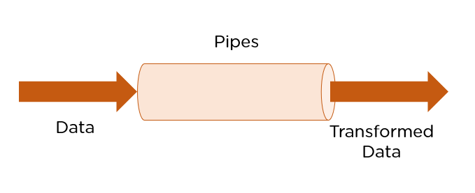

Angular Pipes transforma a saída. Você pode pensar neles como salas de maquiagem onde eles embelezam os dados em um formato mais desejável. Eles não alteram os dados, mas alteram a forma como eles aparecem para o usuário.
Tecnicamente, pipes são funções simples projetadas para aceitar um valor de entrada, processar e retornar um valor transformado como saída. Angular já vem com muitos tipos de pipes como default, prontos para usar. No entanto, você também pode criar tubos personalizados que atendam às suas necessidades.
Tendo em vista o que aprendi durante os cursos e no estágio, segue abaixo alguns exemplos de pipes que podem ser criados e utilizados em vários outros projetos diferentes caso necessite.